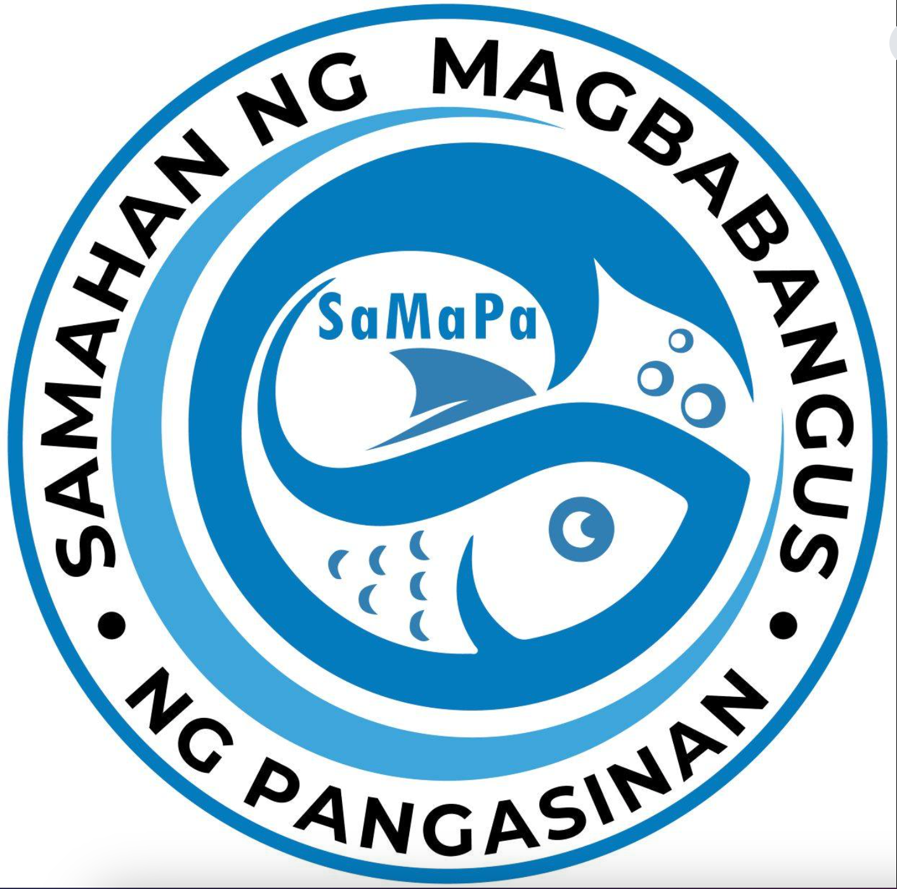

Fishpond Registration System
Samahang Magbabangus NG Pangasinan is a fishpond organization dedicated to helping fishpond owners manage and organize their fishpond records digitally.
To improve fishpond management and provide organized monitoring for all members.
To create a modern and efficient fishpond registration and monitoring system.
Fishpond registration, monitoring, data organization, and reporting.